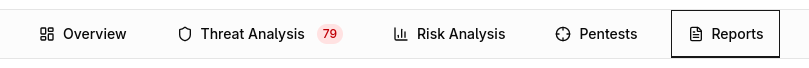
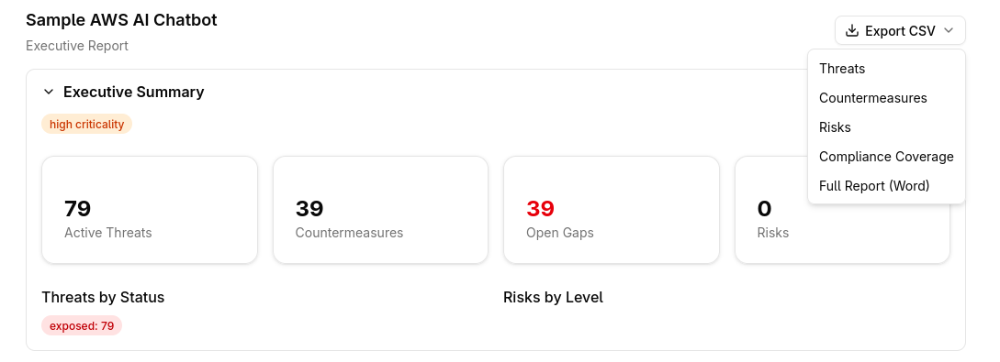

Report Generation¶
Precogly generates threat model reports that serve as evidence artifacts for stakeholders, auditors, and compliance teams. Reports are rendered client-side from data returned by the /api/threat-models/{id}/report/ endpoint, so they always reflect the current state of your threat model.
Accessing the report view¶
Open a threat model from the dashboard, then select the Report tab in the workspace sidebar. The report view loads automatically and defaults to the Executive report type.

Choosing a report type¶
Four report types are available. Click the corresponding card at the top of the report view to switch between them.

Executive¶
High-level overview for leadership. Surfaces the STRIDE summary, countermeasure status, top gaps, risk register, and critical findings without exposing low-level threat or component details. Scope and compliance coverage appear in summary form; assumptions are limited to flagged items only.
Technical¶
Detailed analysis for engineers. Includes full architecture, data assets, components and data flows, individual threat detail (including dismissed threats), all countermeasure categories (status, gaps, waived, and inherited), and a complete findings and action items list. The risk register is shown in summary form.
Compliance¶
Audit-ready view organized around framework coverage. Contains the full compliance mapping and cross-framework mappings, dismissed threats, all countermeasure categories, the risk register, assumptions review, compliance-specific findings, and a completion status checklist. Data assets and the STRIDE summary appear in summary form.
Full Report¶
Every section at full depth. Includes all 18 sections listed in the reference table below with no filtering or summarization.
Report sections reference¶
The table below shows which sections appear in each report type. Full means the section is shown at full detail; Summary means a condensed version; other labels indicate specific filtering (e.g., only flagged assumptions or only critical findings).
| Section | Executive | Technical | Compliance | Full |
|---|---|---|---|---|
| Executive Summary | Full | -- | -- | Full |
| Scope and Assumptions | Summary | Summary | Full | Full |
| Architecture | -- | Full | -- | Full |
| Data Assets | -- | Full | Summary | Full |
| Components and Data Flows | -- | Full | -- | Full |
| STRIDE Summary | Full | Full | Summary | Full |
| Threat Detail | -- | Full | -- | Full |
| Dismissed Threats | -- | Full | Full | Full |
| Countermeasure Status | Full | Full | Full | Full |
| Gaps | Top 3 | Full | Full | Full |
| Waived Countermeasures | Count | Full | Full | Full |
| Inherited Countermeasures | -- | Full | -- | Full |
| Risk Register | Full | Summary | Full | Full |
| Compliance Mapping | Summary | -- | Full | Full |
| Cross-Framework Mappings | -- | -- | Full | Full |
| Assumptions Review | Flagged | -- | Full | Full |
| Findings | Critical | Full | Compliance | Full |
| Completion Status | -- | -- | Full | Full |
Exporting reports¶
The Export CSV dropdown in the top-right corner of the report view provides five export options.

CSV exports¶
Four separate CSV files are available, each covering one domain of the threat model:
- Threats -- all identified threats and their attributes
- Countermeasures -- countermeasure status, ownership, and mapping
- Risks -- risk register entries with severity and likelihood
- Compliance Coverage -- framework control mappings and coverage status
Click the desired item in the dropdown to download the corresponding CSV file immediately.
Word export¶
Select Full Report (Word) from the same dropdown to generate a .docx document containing the complete report. The Word export packages all sections into a single file suitable for offline review or distribution to stakeholders who do not have Precogly access.
Tips¶
| Audience | Recommended report type |
|---|---|
| C-suite / board | Executive |
| Security engineers | Technical |
| Auditors / GRC teams | Compliance |
| Internal archive | Full |
- Switch between report types freely. The underlying data is the same; only the sections and their depth change.
- Use CSV exports when you need to import threat or compliance data into spreadsheets or external tools.
- Use the Word export to share a self-contained report with reviewers outside the platform.